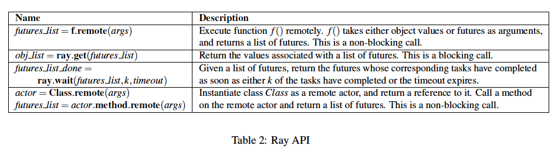
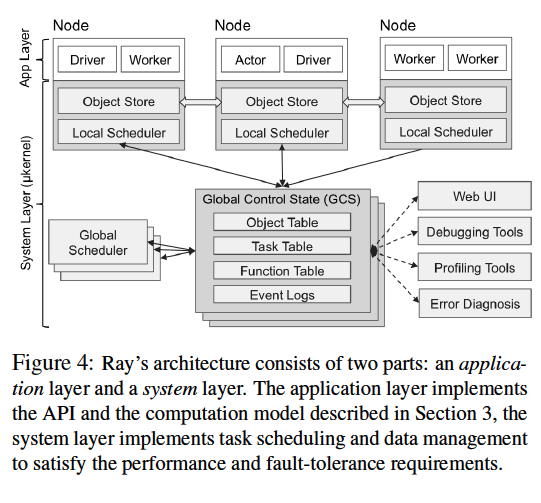
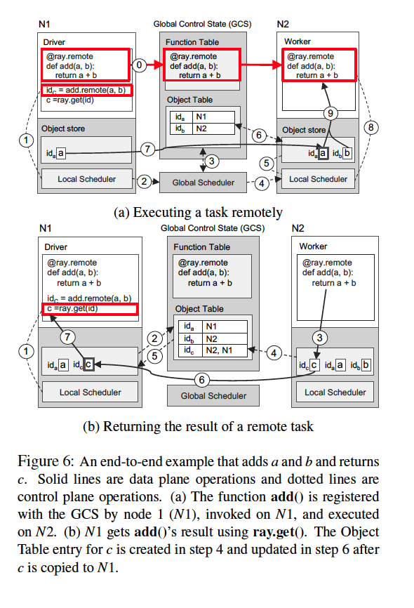

Paper link: https://www.usenix.org/system/files/osdi18-moritz.pdf
Overview
Ray is a new and grossing distributed programming framework, with an ambitious plan to be the foundation of emerging AI/ML applications. In its own words, it aims to “provide a universal API for distributed computing”. Which means it needs to provide a programming interface that’s flexible enough for new applications, and a backend system designed to scale for elastic computing needs with some good performance. This paper (OSDI 18’) explains its API and architecture design to fulfill this goal. And I’ve found some very interesting points.
Programming Interface
Actor Pattern and Future Like Interface
At the programming interface level, Ray provides the “Actor Pattern”. A Python function invocation or a user-defined class object can work as an “Actor” in Ray. Simply annotate the function or class with @ray.remote, and call with f.remote(args) or initiate with Class.remote(args).

Ray’s computing results are always returned as Future for asynchronous computations. In this way, Ray’s Actors can spawn more Actors, and submit the workload in parallel.
These two tools combined can be real powerful in expressing complicated distributed computing computations and the dependencies between them, which often forms a DAG (Directed Acyclic Graph) dynamically. Like the paper described the dynamic task graph when training Reinforcement Learning models.
The programming API can also emulate co≤mputing patterns like MapReduce design pattern. In this example, map functions are defined as Ray actors and called to get results as Futures. Reduce function can also be called remotely and gather all their actual results from Futures. Granted this level of abstraction is not really equivalent to other common MapReduce frameworks. But still, it demos Ray’s flexibility.
Remote Object
Ray allows you to save large memory objects in the cluster for Actors to access (known as the Plasma store). The location is decided by scheduler based on task and data affinity. They can be used for saving intermediate results to speed up computation.
Architecture
Architecture Overview
Ray’s architecture follows a straightforward client-server model, where client is the Ray program and the client library, which communicates with servers that schedules the actual workloads and data to worker nodes.

Ray servers use a primary-follower pattern. Primary nodes is responsible for
- GCS (Global Content Store) that saves the metadata of Actors and memory objects.
- Global scheduler, for when the local scheduler cannot decide its task scheduling.
- Web UI, debugger, profilers, etc.
Each worker node has its own object store and local scheduler.
Global Content Store
The GCS is a a sharded storage for metadata (default backed by Redis), keeping track of tasks and object details, including:
- Specification of every task submitted to the cluster.
- Serialized Python code for remote function.
- Computation graph.
- Current location of all objects.
- Every scheduling event.
It provides a pub-sub infrastructure to enable efficient communications.
Bottom-Up Scheduler
Ray’s scheduler is very unique and interesting. It took a bottom-up approach, with local scheduler on each node as well as a global scheduler for scalability.

Each nodes runs a worker that periodically reports back node load for offloading or centralized global scheduling. Tasks are submitted bottom-up, to local schedulers, and only forward when the local scheduler is under heavy load.
Object Storage
A distributed memory storage of memory. It uses immutable data which simplifies the system design (e.g. avoid consistency issues). It keeps in memory and supports emitting to disk on a memory spill, with LRU policy.

It saves data lineage information (like in Spark) in GCS, so as to tolerate failures: once a result crashes, it’ll re-compute based on the parent data as well as function.
Object store uses Apache Arrow library for serialization.
Summary and Closing Thoughts
In summary, Ray provides a distributed programming framework for a diversity of tasks, with easy programming interface and good performance. It also has a strong backend: a job scheduler and a remote memory object cache. It’s everything a distributed computing framework ever needs.
Also, It’s getting support for a variety of Machine Learning frameworks and integrations (e.g. scikit-learn, Spark, Tensorflow, PyTorch, Hyper-parameter tuning, and future distributed applications, etc). The Ray project itself has focused on RayTune and RayServe projects. With Ray’s flexibility, it’s totally possible that it could be a “glue” framework for all other frameworks.
There’s a case study from Burger King with a very interesting use case of Ray and Spark, with Ray deeply integrated with Spark to access its memory. According to the article:
So they choose MXNet as their deep learning framework, and before cooperating with us, they would allocate a separate GPU cluster dedicated for distributed MXNet training but they find that such a solution is not quite efficient, since in the entire pipeline, a large portion of the total time is spent on copying data from the big data clusters to the GPU cluster.
After deploying RayOnSpark, Ray can now access Spark’s memory. And with a wrapper around MXNet, Ray can combine these two procedures and run the applications in the same cluster. It has better efficiency and is easier to maintain.
This is where I see it can shine, not just as the foundation for emerging frameworks, but as the missing link between ML procedures and applications, speeding up the ML pipeline with the glue layer. In this way, it truly has lots of potential.
References
- Paper link: Ray: A Distributed Framework for Emerging AI Applications https://www.usenix.org/system/files/osdi18-moritz.pdf
- Ray https://ray.io/
- Ray: A Distributed Framework for Emerging AI Applications https://www.micahlerner.com/2021/06/27/ray-a-distributed-framework-for-emerging-ai-applications.html
- Ray Architecture Documentation https://docs.google.com/document/d/1lAy0Owi-vPz2jEqBSaHNQcy2IBSDEHyXNOQZlGuj93c/preview#heading=h.ojukhb92k93n0
- https://docs.ray.io/en/master/ray-design-patterns/map-reduce.html
- Ray Plasma Store https://docs.ray.io/en/ray-0.4.0/plasma-object-store.html
- RayOnSpark Example https://databricks.com/session_na20/running-emerging-ai-applications-on-big-data-platforms-with-ray-on-apache-spark